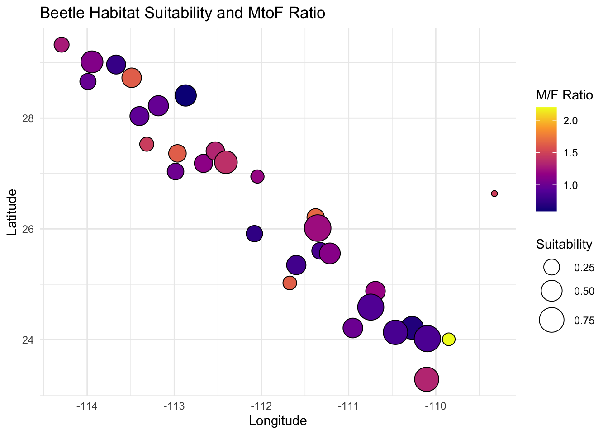
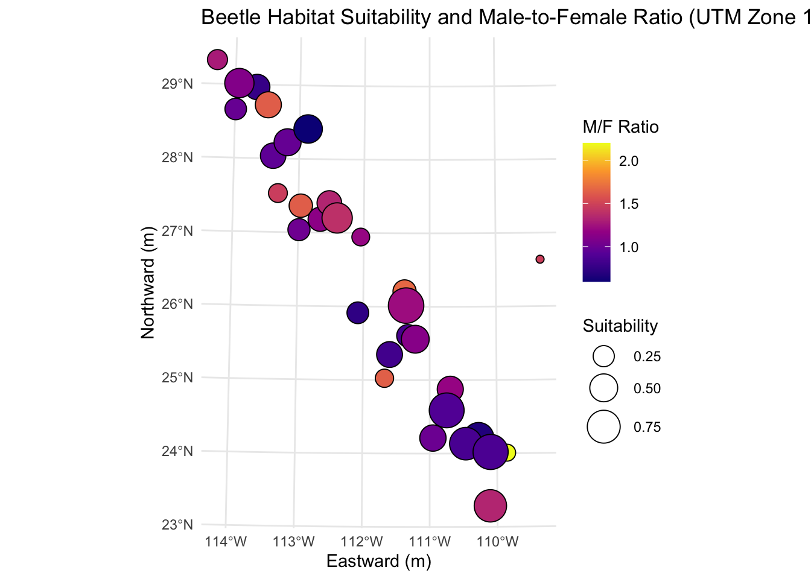

In Class Activity

This homework is a bit quick but is designed to make sure that:
- To make sure everyone can get their computer up-to-date with the proper set of libraries so that we can work with geospatial data, and
- Give you some practice turning normal numerical data into geospatial coordinates and performing basic operations.
Spatial Libraries
The following code defines the set of necessary libraries for the next few weeks and then figures out which (potential) subset you need to install. It then installs them all in one call. It will not load them into your session, you’ll have to do that later in your code chunks.
The Data - Preprocessing
The data for this is some site-level data from the Sonoran Desert bark beetle. The URL is in the next chunk, and is currently being hosted on my class Github repository. Load it in.
Interactive Map
Use the leaflet library and make an interactive map. If you can, add a label to each marker with the ID of the site. You can look at the provider tiles here and use on in the addProviderTiles() function.
There is a great tutorial here on how to customize the leaflet display. You may want to go look at it and see what you can use to make a better display.
Converting to sf Objects
Convert the spatial data in the beetle data.frame into an sf object. Make sure you set the Coordinate Reference System to \(4326\).
Simple feature collection with 31 features and 7 fields
Geometry type: POINT
Dimension: XY
Bounding box: xmin: -114.2935 ymin: 23.2855 xmax: -109.327 ymax: 29.32541
Geodetic CRS: WGS 84
First 10 features:
Site Males Females Suitability MFRatio GenVarArapat GenVarEuphli
1 32 40 27 0.0563 1.4815 0.1436067 0.21851990
2 73 11 5 0.1455 2.2000 0.1373044 0.25346790
3 93 25 21 0.1627 1.1905 0.1630808 0.13252030
4 const 18 11 0.1744 1.6364 0.2803589 0.23475780
5 159 22 15 0.1880 1.4667 0.1598019 0.08087207
6 88 23 18 0.2186 1.2778 0.2661293 0.17557170
7 177 49 50 0.2618 0.9800 0.3378662 0.05000000
8 166 19 26 0.2673 0.7308 0.1199947 0.28599380
9 161 64 63 0.2791 1.0159 0.2523224 0.17072730
10 64 16 19 0.2876 0.8421 0.1410116 0.25091840
geometry
1 POINT (-109.327 26.63783)
2 POINT (-109.8507 24.00789)
3 POINT (-112.0461 26.94589)
4 POINT (-111.675 25.0247)
5 POINT (-113.3161 27.52944)
6 POINT (-114.2935 29.32541)
7 POINT (-113.9914 28.66056)
8 POINT (-112.0806 25.91409)
9 POINT (-112.986 27.0367)
10 POINT (-111.3264 25.60521)Questions
For these questions, you may want to look at the sf cheat sheet here to find the appropriate geospatial function.
- How far apart (in km) are the sites Constitución (
const) and San Francisquito (sfran)?
[1] 290.09- Is there a correlation between habitat suitability and the ratio of males to female beetles sampled at each locale? yes, it looks like there is mild negative correlation based on the pearsons coefficient of -.399.
Pearson's product-moment correlation
data: beetles$Suitability and beetles$MFRatio
t = -2.3484, df = 29, p-value = 0.02589
alternative hypothesis: true correlation is not equal to 0
95 percent confidence interval:
-0.66051230 -0.05287575
sample estimates:
cor
-0.3997266 - Make a plot using
ggplotof the data with suitability as the size of the points and the sex ratio as the fill color.

- Reproject the data and plot it again using an EPSG code defined for Mexico UTM zone 12N (see epgs.io for projections).

We failed to find a significant relationship between sepal length and width (Pearson Correlation, \(\rho\) = -0.4284401, P = 4.5133143^{-8}).